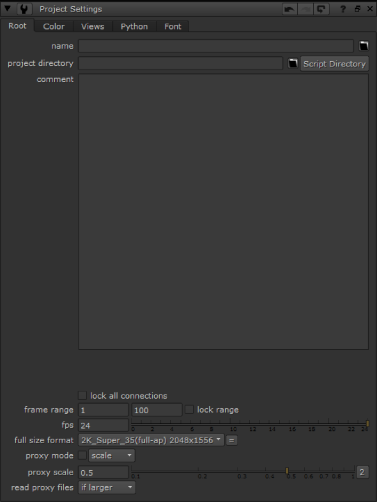

Open topic with navigation
Setting Up the Project
When you start a new project, you need to define project settings for length or frame range, the number of frames per second for playback, and the output format. These options appear on the Project Settings dialog box.
To Set Up Your Project
|
1.
|
Click the right mouse button over the Node Graph, and then choose Edit > Project Settings. |

|
2.
|
In the frame range fields, enter a range of 1 to 28. This is the length of the shot we create for the project. |
|
3.
|
Enter 24 as the frames per second (fps). |
|
4.
|
Click the full size format dropdown menu and choose PC_Video 640 x 480. |
|
5.
|
Close the Project Settings control panel. |
NOTE: On the Project Settings control panel, the Color tab includes options that ensure color integrity for your display and output devices. You don’t need to change the LUT for these tutorials, but we recommend that you research and set these options for your own projects.
Until now, everything you’ve done is standard procedure for a new project. You used the menu bar to access several features during the setup process, and now you’ll use the Nuke toolbar to insert nodes and create a compositing tree.